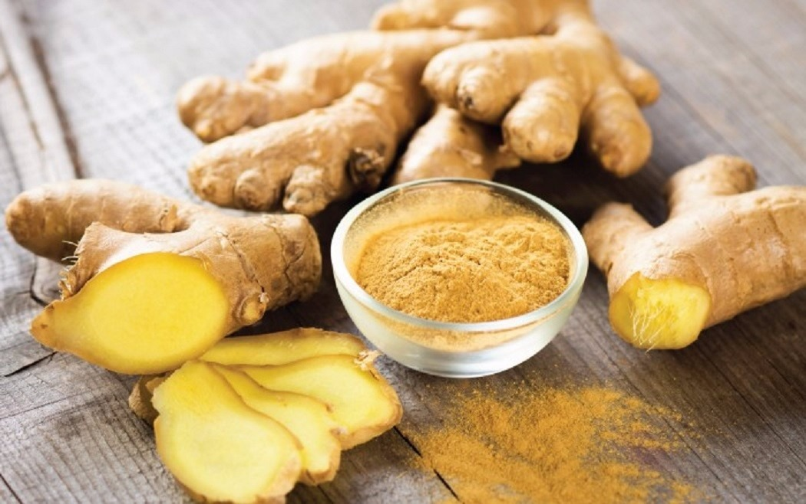

Aumente sua injestão de água
Algo que não é novidade, mas é importante ressaltar...
Fazer 1 hora de aeróbio moderado 5 vezes na semana
Outro velho hábito, porém indispensável, essa dica irá promover melhoras não só na queima de calorias, como na performance do treino...
Termogênicos

Aqui está uma lista dos principais alimentos naturais responsáveis por acelerar o metabolismo energético:
PIMENTA
A pimenta se caracteriza por aumentar o calor no corpo, sendo responsável por ascender a quantidade de calorias queimadas diariamente, inclusive no período do sono
Café

Um dos alimentos que não acelera diretamente o metabolismo celular, mas seu uso trás reações que levam a aumentar o gasto calórico diário, como o aumento da disposição e aceleração das funções cerebrais, as quais trazem consigo benefícios correspondentes a aqueles que buscam a redução de massa lipídica
Gengibre
A gengibre, fruto do subsolo, seja ela em pó ou inteira, revitaliza as funções arteriais e de temperatura do organismo...